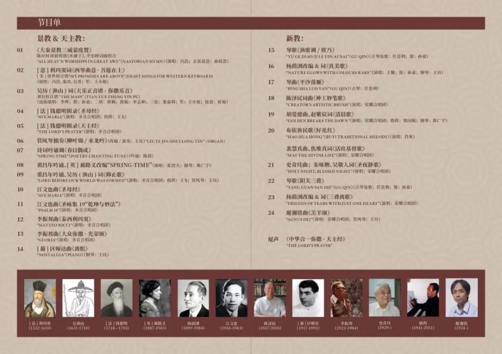
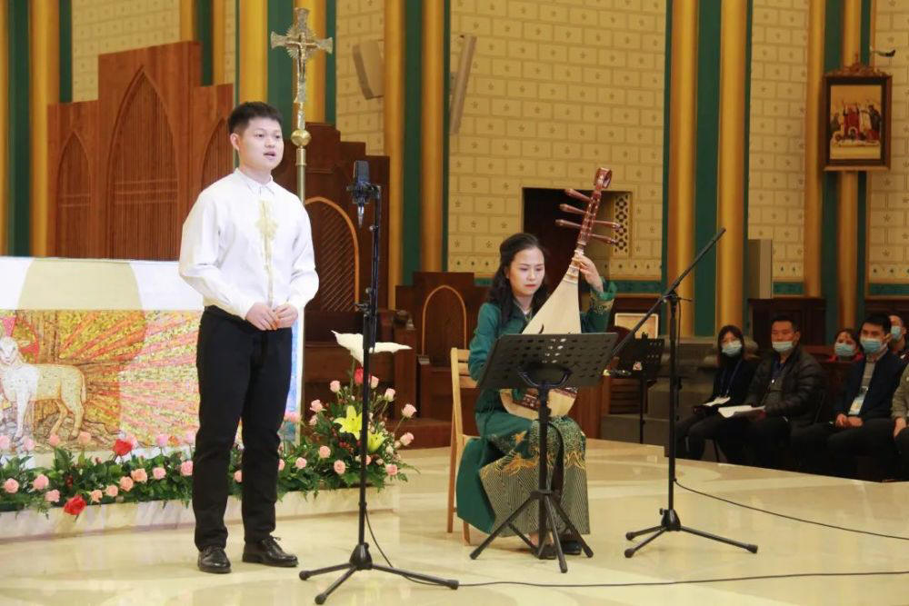
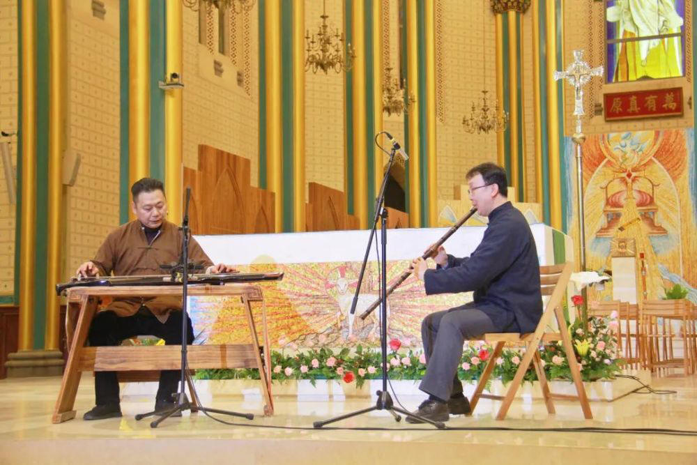
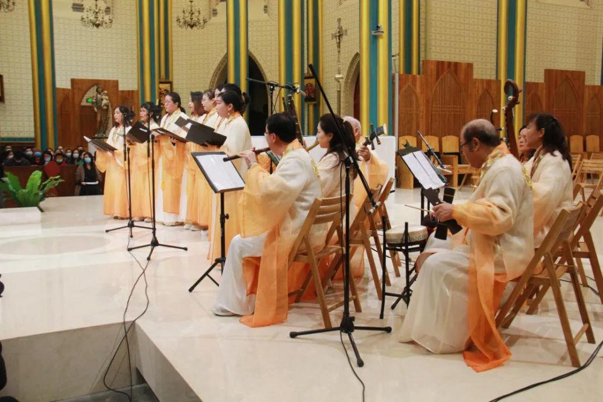
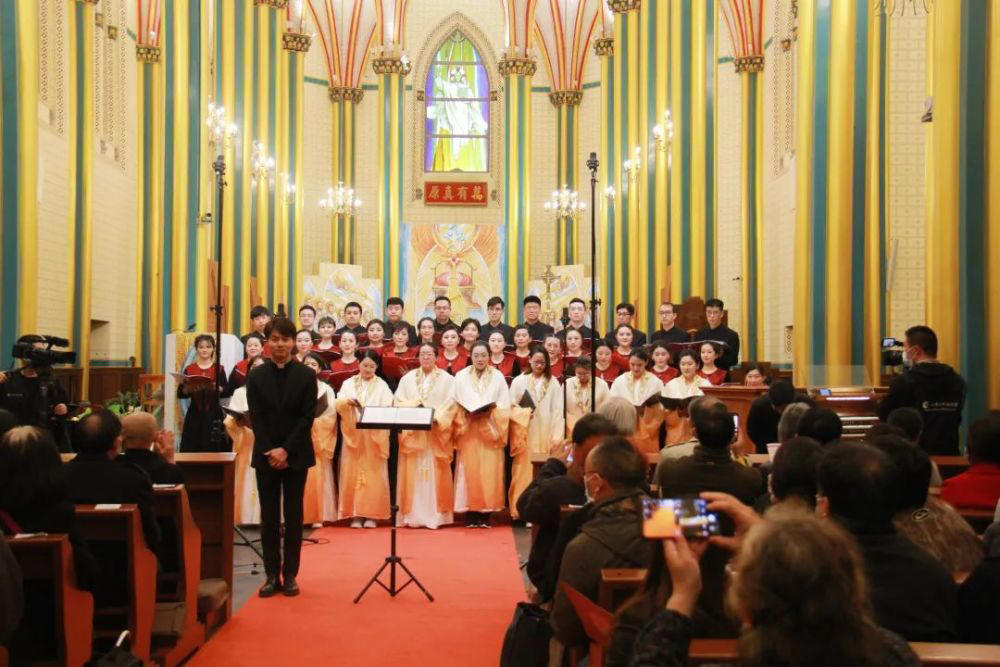

|
|
真美歌（詩集：普天頌讚 第13首） |
|
|
|
第13首 – 真美歌
|
|
|
|
|


詞：楊蔭瀏 1933年https://www.youtube.com/watch?v=y-PXmNHhsk0 - 杨荫浏《真美歌》Ernest Y. L. Yang, “Nature Glows With Colors Rare”
https://youtu.be/SfGEsMfPY70 - 《真美歌 》选择新编赞美诗。孙晨荟等献唱
https://youtu.be/UVGFKXzdh0w
陈泽民
，中国在音乐方面有着丰富的历史遗产，我们必须特别努力地开发、利用、吸收中国传统古典音乐、民歌、少数民族音乐、不同宗教信仰音乐的资源，进行不同信仰之间的音乐对话，“化俗为圣”。有批判、有选择地筛取有益的成分来丰富中国的教会音乐。
《神工妙笔歌》圣保罗堂录制
，当时觉得有几首琴曲很适合改编为赞美诗。1956年他作了这方面的尝试，将《平沙落雁》古琴曲配上自编的赞美诗歌词《欢迎复活晨》，发表在《天风》上。后来他又重写了歌词，即现在的《神工妙笔歌》，《新编》第178首。《新编》中还有一首也是他根据古琴调改编的赞美诗，《普安调
(诗篇 103篇1至13节)》，《新编》第381首。
新编赞美诗381首《诗篇一0三》
作为中国基督教界的老前辈，，许多年前就已经把握这个方向，提出了许多圣诗中国化的宝贵的、中肯的建议。在推进圣诗中国化事工的过程中，他看到实践“圣诗中国化”所遇到的阻力，他说，“近十年来，中国教会中一些思想幵放的领导人很热衷于实践这些思想。但是也有一些年老的牧师和教会成员，对于这样的‘革新’则非常犹豫或抵制。我们也发现要劝导第二、第三代基督徒（主要是城市中），去接受和喜欢中国传统风格的基督教音乐和艺术是蛮困难的。对他们来说，作一个基督徒即是追随西方的传统。人们对于本色的东西反而疏远了，‘崇洋’之风仍萦绕不散。但是我们看到农村教会和大多数新信徒中则少受这种歪风的感染。”
第13首 真美歌* _杨荫浏 Lord, for Thy revealing gifts
经文：“耶和华我们的主啊，你的名在全地何其美”(诗8：1)
《真美歌》的曲调是我国古琴调《极乐吟》。相传为唐代白乐天的作品，由杨荫浏先生改编成为赞美诗。杨荫浏1899年生于江苏无锡，1984年在北京逝世，终年85岁。他是我国著名音乐史学家，民族音乐家。
杨荫浏号如清，又号亮卿，自幼喜欢音乐。6、7岁时就曾向邻居小道士颖泉学习中国乐器，1O岁左右，从美国圣公会女传教士郝路义(L．S．Hammond)学习英语、钢琴、乐理、和声、对位等，杨则教郝中国诗词、音韵和昆曲。1909年时曾向中国著名民间艺人“瞎子阿炳”(名华彦钧)学习琵琶及三弦，1920年信主受洗加入圣公会，1923年入上海圣约翰大学学习经济。1925年五卅惨案发生，杨积极参加大学生反帝爱国运动，因遭受校方反对，遂与同学数百人签名脱离圣约翰大学。1929—1932年他应圣公会之聘，负责编辑《颂主诗集》①。在此期间，中国基督教六个公会成立“联合圣歌委员会”，杨被推选为总干事，负责编辑出版《普天颂赞》；1932一1935年去北平，与刘廷芳(事略参阅第165首)共同编辑《普天颂赞》，并到燕京大学音乐系旁听作曲、西洋音乐史与欣赏课，此时又与刘廷芳编辑宗教文艺刊物《紫晶》，及在宗教刊物《真理与生命》上设“圣歌与圣乐”音乐理论专栏；1936年任哈佛燕京学社研究员。解放后历任中央音乐学院教授，研究部研究员，中国音乐家协会常务理事，中国人民政治协商会议第三、四、五、六届全国委员会委员，中国音乐研究所所长，中国文联委员，中国艺术研究院顾问，《赞美诗(新编)》委员会顾问。
杨荫浏一生对中国民族音乐的研究贡献极大，是世界上少有的中国音乐学者。曾多次被美国约请出国讲学，但他皆以中国音乐宝库在中国民间而婉谢约请。杨荫浏对中国基督教的赞美诗工作贡献也极大，无论作曲、编曲和译词方面都有卓著的成就。这一切都将与中国基督教的发展载入史册。
《真美歌》展现在人前的是一幅美妙大自然的图画。群童嬉戏于青山绿水之畔，他们天真无邪，笑容可爱，真与美的情景引入入胜，令人神往。可惜人间的虚假怨恨犹如脏物玷污了此画。人们的灵性也如此，本应清澈明净，却会有诸多倾跌败坏。不遵行神的旨意。为此，在最后一节中，作者笔锋一转，成为一节祷文：
但求大启信仰心，满怀希望向前行，
爱主爱人奉神意，尽我本分引他人。
求主时添灵性力，将此真美早完成。
《新编》选入杨荫浏的词和曲除这首都是他作的以外，还有第195首的词曲和第176、179两首曲调及译作多首。
①当时的中华圣公会十三个教区，因为差会背景不同，还没有一本通用的赞美诗。
https://posts.careerengine.us/p/5df89acc05632c49bf38f555
昆曲样式的天主教圣乐 那句“阿门” 好神奇啊
近日，“耶稣基督的中国面容——唐代以来的中国圣乐”音乐会”在天主教北京教区西什库主教座堂（北堂）举行。这是一场跨越千年的音乐会，展现了1300多年来中华文明与基督宗教文明相碰撞产生的宗教音乐艺术，具有不同寻常的学术和艺术价值。公元635年，基督宗教的支派景教传入长安；元代，罗马天主教传入中国，宫廷中响起了欧洲古老的格里高利圣咏；明末，意大利传教士利玛窦来到了中国。在这一中西文化交流的时期，西方宗教音乐与中国传统音乐不断交融。
http://beitang.ourwill.cn/v1/live/news/60037/intro收看链接

音乐会分为上下两场，分别由天主教北京教区圣音合唱团和基督教荣耀合唱团联袂出演，并有社会各界音乐专业人士的倾情参演。经过中外专家学者的多方努力，专业演员及合唱团成员的数月排练，一批尘封已久的古老中式原创作品再现于今天，为观众上演了一场不同凡响的音乐圣宴。
音乐会甄选的25个演出曲目，按照时间排序。首先亮相的是唐代的《大秦景教三威蒙度赞》，作为最早的中国基督宗教圣诗，被演奏家以中国的传统乐器五弦琵琶奏响，韵味十足，洋洋盈耳。明清时期的作品有意大利耶稣会传教士利玛窦所作《西琴曲意·吾愿在上》、清朝吴历所作《天乐正音谱·弥撒乐音》、法国钱德明辑录的《圣母经》和《天主经》等。
利玛窦是中西音乐交流的拓荒者。据传，利玛窦进京后曾向朝廷进贡了大键琴（称为西琴）等西方乐器。

五弦琵琶伴奏《大秦景教三威蒙度赞》。
吴历，字渔山，是最早成为天主教神父的中国文人之一，清康熙二十七年(1688年)，被祝圣为司铎。他用儒家学者的思维表达天主教的义理，被誉为“中西文化交流史上的一朵奇葩”。吴历精通音乐，著有《天乐正音谱》，这是中国人所写的唯一采用中国南北曲形式的天主教赞美诗歌集，是中国人创作最早、具有中国艺术风格的一部大型弥撒和赞美诗歌词。吴历则是中国创作赞美诗歌词的第一人，是天主教音乐中国化的先驱者之一。
从《天乐正音谱》中可以看到天主教音乐中国化在清初时期的探索，看到中西文化的融合。比如，在《称颂圣母乐章·端正好》中，吴历写道：“皎团团，光无并。印照人无既无生。似海星明立极中天定，怜悯那苍生命。”这其中使用的“光”“皎”等概念，都是中国传统文化中对“圣洁”的描述用语；“无既无生”，则是对“永�琚邢妝尷�阐释；“立极中天定”，是对神圣之物崇敬之情的表述。吴历在曲文中大量使用中国传统的典故，并且用中国的文化形式加以描述。这部天主教音乐中国化的开创性作品得到了很高的评价：一方面在于它的中国化特色，这种尝试是开创性的；另一方面，它也被认为是符合天主教思想传统的作品。

古琴、箫合奏《阳关三叠》。
明万历至清乾隆200余年间，天主教传入中国，数百名欧洲耶稣会士梯航东来。在音乐领域，会士们不仅将西方音乐作品、音乐理论和西洋乐器介绍到中国，还把有着几千年悠久历史的中国音乐传至欧洲。中乐西传方面贡献最大的人物是法国耶稣会士钱德明，他的《中国古今音乐考》作为用欧洲语言系统研究中国音乐的首部专著，在西方音乐界产生了广泛而深远的影响。他还反复强调中国音乐体系的独创性及其在世界音乐发展史上的重要地位：“早在毕达哥拉斯之前，早在埃及的祭司制度确立之前，更不用说早在墨科利神出现之前，在东方中国，人们就已经意识到了将八度分为十二个半音的问题，中国人称之为‘十二律’。”
音乐会选取了充满中国元素的基督宗教音乐作品，很多曲目来自于1936年的《普天颂赞》，这是一本近百年来在音乐、神学上有很高水平的教会音乐歌本。在动荡不安的中国近代，该歌集编委主张中国人应该用中国音乐。
音乐会奏唱了作曲家江文也所作《圣母经》和《圣咏集》，教会音乐家李振邦作曲的《泰西利玛窦》和《大众弥撒·光荣颂》，古琴曲《平沙落雁》，陈泽民词曲的《神工妙笔歌》，谢湘铭曲《羔羊颂》等。
江文也为中国天主教创作了一系列优秀的作品，由于对中国古代音乐的专注，他的作品充满了古代礼乐和天主教礼仪的精神，古朴典雅而又优美静谧。1938年，他用《西江月》曲谱写成了赞美诗《圣母经》。
李振邦是推动中文天主教音乐发展的先驱者，作有《新礼弥撒合唱曲集》。他的作品语言朴实、曲调简易，很受大众欢迎。
在《新编赞美诗》中有一首优美的《神工妙笔歌》，是金陵协和神学院教授陈泽民根据古琴曲《平沙落雁》改编的。观众先欣赏古琴演奏的《平沙落雁》，再聆听《神工妙笔歌》，感受到中国传统乐曲与天主教文化相交融的魅力。

《圣母经》
一首首曲目神韵无穷、雄壮有力，既有古典乐曲的轻盈舒缓，又有教会音乐的神圣典雅，更不失传统民族乐器的美妙动听。音乐会上，不仅有琵琶、笛、箫、鼓板、三弦、笙、二胡等中华传统乐器，还有教会传统乐器——管风琴的演奏，尽现中国化天主教音乐的独特魅力。随着主持人的解说，伴着天主教音乐的韵律，观众共同开启千年穿越之旅，从唐代到当代，窥见教会先贤诸多尝试背后的适应原则，感悟基督宗教与中国传统文化之间的和合之美、共生之理。音乐会展现了天主教音乐中国化的风采，再现了天主教中国化神学思想的底蕴。
北京市天主教“两会”主席、北京教区主教李山说：自唐代以来，教会古圣先贤在中华大地上下求索、开拓创新，扎根中华大地，不断与中华文化相融合，顺应时代发展要求，留下了诸多宝贵的中国化经验。愿这些经验助力中国教会创作出更多的优秀作品，助力推进天主教中国化。

大合唱《中华合一弥撒·天主经》。
https://new.qq.com/omn/20211112/20211112A01D3F00.html
《普天頌讚》與中國文化
專訪音樂界名宿黃永熙博士
李韡玲
神思 第廿九期 一九九六年五月 45-51頁
＊＊＊＊＊＊＊＊＊＊
摘要
李韡玲小姐一文是對基督教音樂名宿黃永熙博士的專訪。黃博士正編撰《普天頌讚2000年》。文章介紹《普天頌讚》是一本搜集了由唐代大秦景教時代到二十世紀基督宗教的聖詩集，取錄的都有濃厚的中國本土氣息，其中多為中國人原創，充滿著時代色彩。研究基督宗教與中國文化的關係，《普天頌讚》提供了寶貴的資料。
＊＊＊＊＊＊＊＊＊
前言
認識黃博士是十多年前的事，那時候我是名女中音李冰老師的學生，遇上老師舉辦的學生演唱會時，黃博士要是有空，就定然是座上聽眾之一。後來我去參加黃博士負責的香港聖樂團，逢星期二晚上八時到尖沙咀的舊YMCA禮堂練歌。在我印象中，每一個團員都喜歡黃博士，他既是指揮又是朋友，但更像一位父親，他沒有那些所謂藝術家的脾氣，他對聖樂團的表現要求非常嚴格，但從不會惡言相向，頤氣指使，瘋瘋顛顛，他讓我們體會到「音樂可以陶冶性情」這句話的真諦
，就如君子，溫潤如玉。
1990年他退休回到紐約去，就住在他母校哥倫比亞大學的靠鄰(他是哥大師範學院的音樂系畢業生)。1994年重臨香江，他說是「奉召」回來，主要任務(一)是籌備《普天頌讚2000年》的出版及編撰，(二)是協助中國基督教協會主持《讚美詩--
新編》中英對照版的出版事項。
《普天頌讚》是什麼
外表看是很簡單的一本基督教會聖詩集，而當中卻包含了一層非凡的意義，最重要的是讓我們看到基督教文化與中國文化的相互影響。《普天頌讚》所收錄的許多首聖詩，是由中國人原創的，尤其是歌詞，從第八世紀大秦景教(被認為是最早傳入中國的基督教團體)到明朝耶穌會神父吳漁山(中國人)到清朝康熙皇帝到今日各譯詞人、寫詞人的作品，都可以在這部厚達一千七百多頁的中英對照版《普天頌讚》中索尋可得。是活脫脫的一個寶藏。是基督教在中國發展史中重要的一章。如果沒有《普天頌讚》，誰會曉得清康熙是個慕道者，不單熟悉教義且
還作詩一首《康熙十架歌》哀悼捨身救世的耶穌呢！原詩詞如下：
功成十架血成溪，
百丈恩流分自西，
身列四衙半夜路，
徒方三背兩番雞。
五千鞭撻寸膚裂，
六尺懸垂二盜齊，
慘動八垓驚九品，
七言一畢萬靈啼。
我們都知道康熙文武兼備，流傳至今的康熙大字典是個好明証；當日他平定吳三桂、耿精忠、尚可喜之亂，又收回台灣，降服西藏，也有歷史記載。
然而對康熙最深刻最有血有肉的印象也許是來自武俠小說�奡y繪的康熙，例如他的心腹韋小寶，他對付異己的手段(康熙有殺人於五步之內的傳說)；卻鮮有人(甚至沒有人)提及康熙在耶穌會神父的導引之下竟然精研基督教義。如果沒有《普天頌讚》的收藏和發揚，康熙的歷史必然少了許多感人的故事和資料，那麼作為對一個偉大人物的研究，就會失諸片面和浮淺。
你也許會問，研究中國文化與基督教聖詩的相互影響和關係，只有基督教的《普天頌讚》有跡可尋嗎？天主教會在中國的歷史也是源遠流長，為什麼不向天主教埋手呢？
這是個好問題。
但答案也不是三言兩語的一回事。
天主教會的禮儀語言一直以拉丁文為主，也沒有禮儀本地化這回事。從到中國傳教的第一天開始直至1964年梵蒂岡第二次大公會議之後，禮儀中所用的經文和詩歌，都是拉丁文，不管你明白也好一頭霧水也好，教規就是這樣，沒有人敢動它分毫。
六十年代，整個天主教會都知道，如果繼續去墨守那些幾近千年的成規，教會將要迅速老化，不合時宜，與信徒間的關係將會出現無可挽救的鴻溝。於是就由當時的教宗若望二十三世召開了震撼全球的，一個劃時代的梵二會議，訓令教會走本地化路線，從
禮儀到日常的祈禱到聖詩的誦唱，全用當地文字，並切合當地的文化和傳統。
即是說1964年梵二之後，中國(香港)天主教會才積極搜集流落民間的許多原創聖詩，也積極鼓勵創作本地化的宗教音樂。梵二後發崛出來的中國聖樂家江文也的眾多譜以中國色彩音樂的聖詩如《聖母經》等就是一個最好的例子。我當時在天主教學校唸中學，江文也的聖歌也唱了不少，印象最
深刻的是《聖母經》，因為跟外國作曲家如舒伯特的《Ave Maria》的味道是截然兩回事。江文也的幽怨得多了。
《普天頌讚》的過去與未來
《普天頌讚》於1936年編撰完畢，並於同年在上海出版，這是最早的版本。
這本聖詩集的編撰，絕不是一朝兩日的事，而動員的人力物力，資料搜集，更非局外人可以想像。搜集的聖詩，從大秦景教時代開始至1936年止，內容有歌曲歌詞皆為原創的，有歌詞是從外文聖詩翻成中文的，有歌詞是原創但曲調是採用本國或外地曲調的；全是中文。
為了有效地完成這項工程，於是由中國六個基督教宗派分別委派代表組成了一個聯合聖歌編輯委員會來負責，這六個宗派是：中華基督教會(Church
of Christ in China)、中華聖公會(Chung Hwa Sheng Kung Hwei)、美以美會(Methodist Episcopal
Church North)、華北公理會(North China Kung Li Hui)、華東浸禮會(East China Baptist
Convention)、監理會(Methodist Episcopal Church South)。
經過了七年的籌備、搜集、篩選、鑑証、編撰，終於1936年面世，由廣學會出版，初版共印行十多萬本。
目前正在各基督教禮拜堂及學校使用的《普天頌讚》是七十年代重新修訂的版本，「自從中國教會的重心由中國大陸遷移至海外，文化和社會背景都有改變。普天頌讚出版後的數十年當中，科技的發達，以致人類所面對的人口、能源、環境、種族等種種問
題，不是以前所想到的。在西方的教會�堙A一本重要的聖詩集，經過二三十年後，必需修訂，取銷那些不能通過時間考驗的詩歌，增添在這時期內所產生的新詩新調。否則這詩集會漸漸被淘汰，而由其他新編的詩集所取代。」--序言部份，《普天頌讚》1977年11月版。
六十年代末，基督教文藝出版社持上述理由，開始籌劃修訂《普天頌讚》，並獲得基督教各宗派的熱烈支持，派出代表參與盛事，當中成員就包括了黃永熙博士和韋瀚章教授。
正式的編撰工作於1971年3月12日展開，至1977年12月，新修訂的《普天頌讚》正式付梓面世。
今日，《普天頌讚》又在「大興土木」廣集各方賢能與專家，舉行第二次的修訂，籌編《普天頌讚2000年》。
《普天頌讚》洋溢的中國氣息
(1) 調寄民間歌謠
這些聖詩都是先有曲，然後依曲填詞。而曲調則多採用各地地方歌謠，如被稱為很能反映現代社會情況的《全地屬主歌》(翻譯)，其曲調就是採用一首湖南民歌；《靈修歌》則是調寄《江上船歌》；《上主小孩歌》調寄中國民謠；《真神造天地》調寄台灣民謠。
事實上，有許多民歌，由於年代湮遠或者戰亂連年，早已在尋常百姓家中散佚凋零，無可稽考。《普天頌讚》在這方面的搜集和記載，實在是一項貢獻，例如古琴曲譜「極樂吟」，要不是用來配以《真美歌》，也許早就零落隨草莽。
(2) 遣字用辭充滿時代色彩
1625年，一座在唐朝建立的石碑(公元781年)在西安附近出土，碑文很長，頂上有一石刻十字，並寫疞：大秦景教流行中國碑。碑文開始以佛教及道教的術語，陳述基督教教義大綱，然後追述該教在中國傳播經過主要階段。
景教意思是教義光輝正大當受人景仰的意思。大秦乃為當時波斯或巴力斯坦的稱號。唐史記載636年(貞觀中)，大秦阿羅本帶聖經來長安，太宗覺其教義正直合理，予以尊崇。
是以景教可說是基督教傳入中國的先頭部隊。《普天頌讚》內就收錄了景教中人當時以漢字寫的一首名為《大秦景教三威蒙度讚》的聖詩，節錄如下：
--
無上諸天深敬歎，大地重念普安和，人元真性蒙依止，三才慈父阿羅訶。
--
我今一切念慈恩，歎彼妙樂照此國；彌施訶普尊大聖子，廣度苦界救無億。
--
難尋無及正真常，慈父明子淨風王，於諸帝中為帝師，於諸世尊為法皇。
全首聖詩共十一節，從以上三節看，你明白當中的意思嗎？
《普天頌讚》附錄中謂：「中國最早的一首聖詩《大秦景教三威蒙度讚》是法國漢學家Paul Pelliot
於1908年從甘肅的敦煌石室中發掘出來的。可能是在第八世紀從西方古代聖詩《榮歸主頌》節譯過來的聖詩之一。當時所譯的名詞當然與現代基督教的名詞不同，例如稱耶和華(Awe)為阿羅訶，彌賽亞為彌施訶，聖靈(Holy
Spirit)為淨風王等。」
不管此詩是創作還是翻譯，單欣賞其遣辭用字，尤其作者用了七言絕句，就充滿時代色彩，這些古典中文(Old
Chinese)，在今日看來，真是既遙遠又陌生，而且對今日一般中國人來說，可算是艱澀難解。
然而，我們透過這些文字和意境，卻可以回返盛唐，神遊於杜甫李白的詩歌王國�堨h。
唐朝是中國詩歌史上的黃金時代，無論古體律絕，五言七言，都是由完備而達全盛之境。
唐詩的特色之一，是其內容包含的豐富，通過內容，我們可以看到自然山水，戰場邊塞，農村商賈，宮妃貴妾以及尼姑妓女的生活，政治的現狀，時人的意識形態，貧富貴賤的情形等等。這首《大秦景教三威蒙度讚》七言絕句，正藉著宗教的意境，讓我們
看到了基督教與當時文化的相互影響。
一如前述的《康熙十架歌》。唐朝與清朝，年代相差約十個世紀，其間的中國也經歷了不少變遷，文字的變化和表達也明顯地有了改變，清朝比唐朝的更接近現代。湊巧地，康熙的也是一首七言詩，不過卻是首七律。
可見，唐詩影響力之大與受歡迎的程度，不管是販夫走卒，帝王將相，一千年之後，仍然樂於使用這種文學體裁。也可見成長於滿族傳統思想與規範的康熙皇帝，到了中原生活，也深受漢族千年前的文化所感動，亦可見唐朝文化的深遠影響勢力。
到了二十世紀二十年代，中國發生了以胡適為首的新文學運動，反對文以載道，提倡人的文學並使用白話文來表達。而胡適、劉半農、沈尹默更於1918年1月號《新青年》上刊登了他們的白話詩。接著一群具影響力的白話文作家如魯迅、周作人、徐志摩、沈從文等紛紛湧現。到了三十年代，已經有所謂新文學的收穫期。流風所及，我們在《普天頌讚》輯錄的歌詞中，也可以看見這個現象，以《南針歌》為例
，是楊蔭瀏寫於1934年，其中一節如下：「愛之泉源救世神，曾將十架變南針，解決人生諸矛盾，入世廣佈救拯恩；感謝仁愛慈悲主，真理光采啟幽昏。」非常的三十年代是不是？已經曉得引用現代術語「南針」來比喻十字架是我們逆旅中的指南針。此外，歌詞的其他四節中
，曾有「泡影」、「陰沉」、「歸宿」、「墮落」等用辭，明顯地，已隨著新文學運動進入白話文的時代�堨h了。
到了快接近二十一世紀的今日，中國文字的變化已不限於新文學運動的年代。地方色彩的強調、區域文化的訴求，中國文字已經從原來的純正走向極端的通俗，道地而少眾的廣東話、閔南話、上海話，甚至潮州話，都可以在當地的刊物上鋪天蓋地的印刷出
來。
我們還未從這本跨越千多年中國文化的《普天頌讚》中搜尋得到。最近的作品也不過是到了七十年代中為止，例如黃永熙博士寫於1972年的《寶寶睡覺歌》，用字簡單優美，意境安靜詳和，是百分百的既純正又摩登的中文。
不過，待《普天頌讚2000年》出版後，我們可能從中發現了一首甚至以上的中國方言如廣東話聖詩都「話唔埋」！但黃博士一再強調，這個情況一定不會發生，因為「這是一本不單在中國，也在全球有華人的地區發行的聖詩集，所以必然會用純正的普通話來寫詞。」黃博士補充說 ：「我們非常重視《普天頌讚》，這是一本很好的聖詩集，而且當中有好多首原創的中文歌詞，正被英美教會翻成英文編入他們的聖詩集中，可見《普天頌讚》的普世性。」
http://archive.hsscol.org.hk/Archive/periodical/spirit/S029g.htm